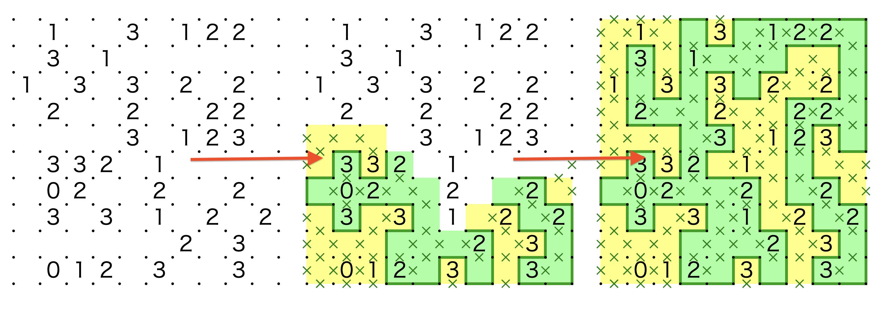
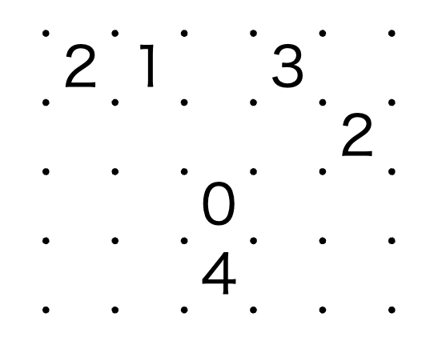
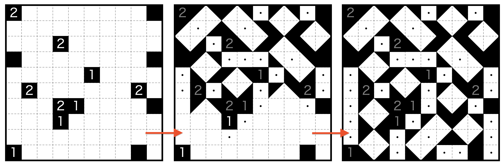

Slitherlink 的 4Cell 紧凑编码：数字、跳格、空段¶
本文是「pzprjs URL 编码体系」系列的第 2 篇，讲解逻辑谜题 Slitherlink（URL 标识
slither） 的紧凑 URL 编码规则，并顺带讲清复用同一编码原语的 Shakashaka（shakashaka）与 Akari（内部标识lightup，URL 别名akari）。
Slitherlink 的规则：在格点线上画一条闭合回路，每个格子中的数字表示其四周边线被回路经过的条数。因此问题部分是一个 0–4 的数字矩阵——这正是 pzprjs 中被称为 4Cell（4 态单元格编码） 的经典场景：单元格数值范围小（0–4）、大部分格子为空（未给出数字）。
上面的 URL 中，? 之后依次是 pid / cols / rows / body。这篇长仅 45 字符的 body，压缩了一张 10×10、含 40 个数字的 Slitherlink 盘面。它是怎么做到的？下面逐步拆解。

1. URL 结构解剖¶
通过前面文章的介绍，我们知道了 pzprjs 的 URL 数据段格式如下：
| 段 | 示例 | 说明 |
|---|---|---|
variant |
v:xxx/ |
以 v: 开头的变体标识，数回不常见 |
pflag |
f/ |
单个非数字字符，表谜题选项。 数回以 f 表示「全顶点回路」，极少见 |
cols |
10 |
列数（宽） |
rows |
10 |
行数（高） |
body |
gb812c… |
压缩后的问题数据正文 |
复习一下框架细节：
- 解析时：
variant、pflag、cols、rows依次被从/分隔的段中剥出，剩下的所有段再用/重新拼接成body。所以理论上 body 内部也可以出现/。 - 生成时：把各段用
/拼接后，如果 body 最后一个字符不是字母或数字，则在末尾补一个/，防止 t.co 等短链服务把结尾的-、.等字符吞掉。 - 解码与编码方向相反：解码时逐字符读 body、把值填进格子；编码时逐格扫描盘面、把结果追加成 body 字符。
2. 核心原语：4Cell（4 态单元格编码）¶
4Cell 这个名字来自它的适用条件：单元格数值只有 0–4。它把三种信息折叠进一套 base-36 字符表——每读一个字符，要么写出数值、要么附带跳格、要么代表一段空段：
- 数值本身（0–4）；
- 后面连续空格的个数（跳 0 / 1 / 2 格）；
- 较长空段的 run-length（连续 1–20 个空格）。
下面的 字母表分段映射表 是 4Cell 的完整语义。设当前格子下标为 c，每读一个字符，游标前进量如下（字符值 = 字符在 base-36 里的数值，a=10、z=35）：
| 字符段 | 含义 | 当前格写入 | 游标前进 | 一句话 |
|---|---|---|---|---|
0–4 |
直接写数 | 数字 0–4 | 1 格 | 数字就写在这里，下一格由后续字符决定 |
5–9 |
写数 + 跳 1 个空格 | 数字（字符值 −5）即 0–4 | 2 格 | 数值存当前格，下一格被跳过 |
a–e |
写数 + 跳 2 个空格 | 数字（字符值 −10）即 0–4 | 3 格 | 数值存当前格，后两格被跳过 |
f |
（编码器不会产生） | 不写 | 1 格 | 各分支都不命中，仅前进 1 格，等价于一个空格 |
g–z |
连续空段 | 不写 | 字符值 −16+ 1 = 1–20 格 | 连续空 n 格，n = 1 + 字符值 − 16 |
. |
写入「无数字的黑格/墙」 | 黑墙 | 1 格 | 仅 Shakashaka / Akari 使用；Slitherlink 的解析器同样兼容 |
关键点：
- 值段
5–9、a–e的跳格其实是免费的—— 它把「下一格/下两格是空」这个信息折叠进了数值字符本身，等于用 1 个字符同时表达「数值 + 1 或 2 个空格的占位」。这是 4Cell 比「逐格写数字」紧凑一倍以上的核心原因。 f（15）是字母表里唯一被跳过的字符：编码器产生的值只会落在0–9、a–e，因此f不会被输出，但解码器仍能容忍它（当作一个空格）。这样的话区间就是a–e（10–14）而不是a–f（10–15）。
2.1 run-length（count + 15 计数规则）¶
空格的定义是「既没有数字、也不是黑墙的格子」。编码器用一个游标逐格扫描，同时维护一个 count 累计连续空格：
- 遇到空格：
count加 1； - 遇到内容字符（数字 0–4 或
.）：若count > 0，先输出 run-length 字符，再输出内容字符，然后把count归零； - 若
count恰好涨到 20：立即输出z并归零（即使还没遇到内容字符）——这是为了让长空段也能被 20 格一组的 run-length 覆盖； - 扫描结束后若
count > 0：再输出一个 run-length 字符（尾随空段）。
因为 count + 15 落在 16–35，恰好映射到 g–z：
| count（连续空格数） | 1 | 2 | 3 | … | 18 | 19 | 20 |
|---|---|---|---|---|---|---|---|
count+15 |
16 | 17 | 18 | … | 33 | 34 | 35 |
| 输出字符 | g |
h |
i |
… | x |
y |
z |
解码端 g–z 的还原：字符值减 16 得到「跳过的空格数」，再叠加每字符固定占掉 1 格，正好推进（1 + 字符值 − 16）格。编码、解码两边对称。
2.2 编码器的跳格决策¶
当遇到数值（0–4）时，编码器向前看两个格子来决定用哪个字符。核心决策浓缩成一张表：
| 数值后面的两格情况 | 使用的字符段 | 跳过的空格 | 数值为 3 时的例子 |
|---|---|---|---|
| 下一格就有内容 | 0–4 |
0 | 3 |
| 下一格空、下下格有内容 | 5–9 |
1 | 8 |
| 后两格都空 | a–e |
2 | d |
其中「有内容」指格子里有数字（0–4）或有黑墙（.）；只有真正的空格才算空。这个贪婪的向前看策略是确定性的，因此同一盘面每次编码都得到完全相同的 body——这就是「重编码后 body 不变」的保证。被数值字符跳过的空格不会进入 run-length 计数；只有游标逐格走到的空格才累计成 run-length。
3. 编码逐步推演：盘面 → body¶
用一个真实的 5×4 小盘面（20 格）走一遍，它覆盖了 4Cell 的主要编码分支（直接写数、跳 1 格、跳 2 格、run-length 压缩）。· 表示空格（区别于正文中表示黑墙的 .）。注意，标准数回几乎不会出现“4”这个数字（不然整个盘面只有这一个格子的外侧回路），这里仅作演示：
格子按行优先编号 c0..c19：c0=2, c1=1, c3=3, c9=2, c12=0, c17=4。
| |
逐字符拼出 body：2 6 d i c a h e → 26dicahe。
整条 URL 为 slither/5/4/26dicahe。解码后格子序列为 2, 1, -1, 3, -1, -1, -1, -1, -1, 2, -1, -1, 0, -1, -1, -1, -1, 4, -1, -1（-1 表示空格），正是上面这张盘面，完全一致。

两个更小的例子（便于在脑中核对），恰好补齐上面未涉及的两种边界：20 格封顶与尾随空段——
- 5×5，只有
c0=3：
c0=3 且 c1,c2 空 → d（跳 2 格）；剩下 22 个空格 → 前 20 个 z、后 2 个 h。body = dzh，整条 URL 为 slither/5/5/dzh。
- 3×3，
c0=3, c2=2：
c0=3、c1 空、c2 有内容 → 5+3='8'（跳 1 格）；c2=2、c3,c4 空 → 10+2='c'（跳 2 格）；剩下 4 个空格在循环外累计 count=4 → 输出 (4+15)=19='j'。body = 8cj，整条 URL 为 slither/3/3/8cj。
4. 解码逐步推演：body → 盘面¶
仍以 26dicahe（5×4）为例，按 4Cell 逐字符还原：
| 字符 | 分支 | 计算 | 落点格子 | 游标推进 |
|---|---|---|---|---|
2 |
0–4 | 字符值 2 → 数字 2 | c0 = 2 | → 1 |
6 |
5–9 | 6-5=1 |
c1 = 1 | → 3（跳过 c2） |
d |
a–e | 13-10=3 |
c3 = 3 | → 6（跳过 c4,c5） |
i |
g–z | 18-16=2，再加 1 |
不写 | → 9（跳过 c6,c7,c8 共 3 格） |
c |
a–e | 12-10=2 |
c9 = 2 | → 12（跳过 c10,c11） |
a |
a–e | 10-10=0 |
c12 = 0 | → 15（跳过 c13,c14） |
h |
g–z | 17-16=1，再加 1 |
不写 | → 17（跳过 c15,c16 共 2 格） |
e |
a–e | 14-10=4 |
c17 = 4 | → 20（跳过 c18,c19） |
最终：c0=2, c1=1, c3=3, c9=2, c12=0, c17=4，其余为空格。与编码方向完全互逆。
注意解码 g–z 分支：字符值减 16 只推进「跳过的空格数」，之后每个字符末尾还有一个固定的「本字符占掉 1 格」。这就是为什么上面 i 需要「再加 1」才是总推进 3 格。
5. Shakashaka谜题的 4Cell示意¶
这一部分补充一个逻辑谜题，Shakashaka，它的pzprjs 的盘面表示和数回非常类似，规则稍微复杂：
(A) 每个未着色的区域都必须呈矩形形状。该矩形可以垂直放置，也可以以 45 度角进行旋转。
(B) 黑色墙格永远不放三角形；带数字的黑墙格，其数字表示四周（上、下、左、右）的白格中需要放置三角形的个数。因此「数字格子」本身就是黑块——本盘面 9 个带数字的黑块 + 5 个无数字的黑块（.），黑块合计 14 个。
比如这个 URL：

求解过程
- 格值分布：
| 格值 | 1 | 2 | 空格 | 黑墙（.） |
|---|---|---|---|---|
| 数量 | 4 | 5 | 86 | 5 |
逐步解码（坐标 (x,y) 为 1 起点的列、行；# 表示无数字黑块，· 表示空格）：
整条 body 只有 27 个字符。解码规则与 §2 完全相同，这里直接给结果：
| body 字符 | 分支 | 落点 | 行为 |
|---|---|---|---|
c |
a–e | c0(1,1) = 2 | 数字 2，跳 c1,c2 |
l |
g–z | — | 空段 6：c3–c8 |
. |
黑墙 | c9(1,10) = # | 无数字黑块 |
s |
g–z | — | 空段 13：c10–c22 |
c |
a–e | c23(3,4) = 2 | 数字 2，跳 c24,c25 |
j |
g–z | — | 空段 4：c26–c29 |
. |
黑墙 | c30(4,1) = # | 无数字黑块 |
n |
g–z | — | 空段 8：c31–c38 |
. |
黑墙 | c39(4,10) = # | 无数字黑块 |
k |
g–z | — | 空段 5：c40–c44 |
b |
a–e | c45(5,6) = 1 | 数字 1，跳 c46,c47 |
i |
g–z | — | 空段 3：c48–c50 |
c |
a–e | c51(6,2) = 2 | 数字 2，跳 c52,c53 |
j |
g–z | — | 空段 4：c54–c57 |
c |
a–e | c58(6,9) = 2 | 数字 2，跳 c59,c60 |
h |
g–z | — | 空段 2：c61–c62 |
2 |
0–4 | c63(7,4) = 2 | 直接写数：c64 也是数字 |
b |
a–e | c64(7,5) = 1 | 数字 1，跳 c65,c66 |
h |
g–z | — | 空段 2：c67–c68 |
. |
黑墙 | c69(7,10) = # | 无数字黑块 |
i |
g–z | — | 空段 3：c70–c72 |
b |
a–e | c73(8,4) = 1 | 数字 1，跳 c74,c75 |
t |
g–z | — | 空段 14：c76–c89 |
b |
a–e | c90(10,1) = 1 | 数字 1，跳 c91,c92 |
k |
g–z | — | 空段 5：c93–c97 |
. |
黑墙 | c98(10,9) = # | 无数字黑块 |
g |
g–z | — | 空段 1：c99 |
Shakashaka 特有的黑块表示，归纳三点：
-
.是独立的「内容」字符：无数字黑块用.单独一个字符表达，与数字字符互不干扰。在编码层它与数字地位相同——会阻断数字的跳格（数字后面紧跟黑块时，编码器只能退回 0–4 直接写数分支，见 §2.3），也会终结一段 run-length（先输出空段字符，再输出.）。看 body 开头cl.的因果：c写 c0=2 并跳 2 格，l压缩 c3–c8 共 6 个空格，游标正好落在 c9——若 c9 是空格而非黑块，这 7 个空格就会并进同一个空段字符（m）。 -
数字格子本身就是黑块：谜题语义上数字只能写在黑墙格里，所以「9 个数字」与「5 个纯黑」并不冲突，黑块合计 14 个。按位置排序，c73(8,4)=1 恰好是倒数第二个数字格（最后一个数字在 c90(10,1)），同时也是倒数第三个黑块格（其后只有 c90 与 c98 两个黑块）。
-
相邻黑块触发直接写数：
2落在 c63(7,4) 用的是 0–4 直接写数分支，因为下一格 c64(7,5) 紧接着也是数字（b= 1）——两个黑块相邻时，第一个数字无法跳格。
编码方向与 §3 完全互逆：黑块在编码端按「内容」处理——遇到黑块先冲掉累计的 run-length，再输出 .。重编码与输入逐字符一致。
5.3 Akari：同一个谜题，akari 与 lightup 两个 URL 标识¶
使用纯 4Cell 编码的还有谜题 Akari，美术馆， URL 有的写 akari/、有的写 lightup/，两者都合法，是同一谜题的不同称呼，pid 别名 而已：这个谜题的内部标识是 lightup，但 URL 输出用的标识是 akari。解析时 akari 会被反向映射回内部标识 lightup；生成时统一输出 akari。因此：
| 输入 URL 标识 | 解析结果 | 重编码输出 |
|---|---|---|
akari/… |
lightup |
akari/… |
lightup/… |
lightup |
akari/… |
输入 akari/ 与 lightup/ 等价，输出统一为 akari/。
例：
- 解析为内部标识
lightup；重编码为http://pzv.jp/p.html?akari/10/10/gc.bl.h625.ibjbh.hbg1.h.b.bgc.jbjcg6.6.h.n..hb——输入的lightup/变成了akari/，body 不变。 - 格值分布：
| 格值 | 0 | 1 | 2 | 空格 | 黑墙（.） |
|---|---|---|---|---|---|
| 数量 | 1 | 12 | 4 | 70 | 13 |
其中 0–4 是带数字的黑墙，. 是无数字的黑墙（共 13 个）。17×17 的 akari/17/17/… 同样解析为内部标识 lightup、重编码仍为 akari/。具体是怎么解码的，可以留作课后作业。
6. 同一编码原语，三种谜题语义¶
slither、shakashaka、lightup 三个谜题的编码块，都只是各自调用一次 4Cell 原语（解码方向一次、编码方向一次），没有任何其他拼装。它们共享的只是编码层语法（数值 0–4、跳格、run-length、.），而每个格子的语义完全不同：
| 维度 | Slitherlink（slither） |
Shakashaka（shakashaka） |
Akari（lightup） |
|---|---|---|---|
| 共用原语 | 4Cell | 4Cell | 4Cell |
| 数字存放 | 普通格子的格值 | 普通格子的格值 | 普通格子的格值 |
| 数值范围 | 0–4 | 0–4 | 0–4 |
0–4 的谜题含义 |
该格四周边线被回路经过的条数 | 该黑色墙格四周的白格中需要放三角形的个数 | 该黑色墙格周围上、下、左、右四个方向共需摆放灯的数量 |
| 空格 | 未给出数字、可走线 | 可放三角形的白色格 | 可放灯的白色格 |
黑墙（.） |
不使用（Slitherlink 无墙概念） | 无数字的黑色墙 | 无数字的黑色墙（仅占位阻挡光线） |
| 答案/交互信息 | 边线画在格子的边上；数字存在格子里 | 三角形方向与黑板标记单独存，数字存在格子里 | 灯的位置单独存，数字存在格子里 |
| pflag | 支持 f（全顶点回路变体） |
无 | 无 |
总结：「4Cell 是语法，谜题是语义」。编码层只认识格值的几种取值（数字 0–4、空格、黑墙），并不知道这些值在某个谜题里代表「边数」「三角形个数」还是「灯的数量」。同一个 2，在 Slitherlink 里是「周围要有 2 条边」，在 Shakashaka 里是「周围要有 2 个三角形」，在 Akari 里是「周围要有 2 盏灯」——但它们在 URL body 里都只是同一个字符 2。
另外注意一个同族但不同原语的变体：swslither（「Slitherlink バッグ版」，羊/狼版）。它把羊（5）和狼（6）也写进格子，因此改用 0–9 数值编码（Number10 风格），而不是 4Cell。实测：5×5 盘面中 c0=5, c1=6 编码得到 swslither/5/5/56w。
所以，这三种谜题支持的盘面可以简单总结如下：
- Slitherlink / Shakashaka / Akari 的盘面元素：0–4 数字、空格、无数字的黑墙（
.）。三者共用 4Cell，编码方式完全相同，只是同一数值在不同谜题里的语义不同。 - Slitherlink 额外支持 pflag 变体：
f表示「全顶点回路」——回路必须经过盘面上的每一个格点（即每条格线端点都被回路占用），属于规则变体而非显示选项。 - Akari 额外支持
lightup/akari双 URL 标识：输入两种都认（宽容），输出统一规范为akari。